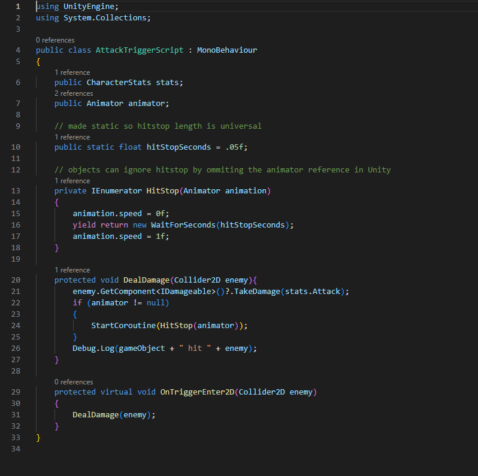
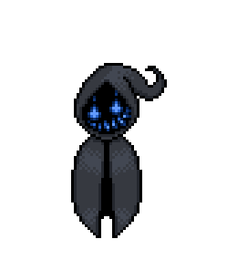

Blackberry Winter
For the past several months, I've been working hard coding and developing my own videogame (dubbed Blackberry Winter) using the Unity engine. Unity is a free game engine widely used for its versatility, strength, and optimization. Unity supports custom C# scripts to create games of any shape and size.
As this is my first attempt at making a videogame, getting things off the ground took some time. I spent subsantial time doing research in the beginning, but things are starting to come together. This development screenshot was taken in July of 2024.
Because Blackberry Winter is written in C#, it's been an excelent vehicle for practicing concepts I was taught at BYU-I, particularly Object-Oriented Programming and data structures. Through this process, I have also discovered new tools such as interfaces and state machines.
 Fortunately, I'm not alone through this endeavor. My wife, as well as a few friends, are supporting me with original art, music, and written dialogue. Meanwhile, I write all scripts and assemble the assets within Unity.